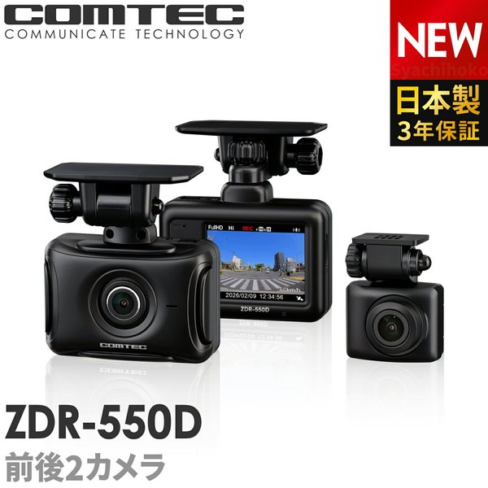
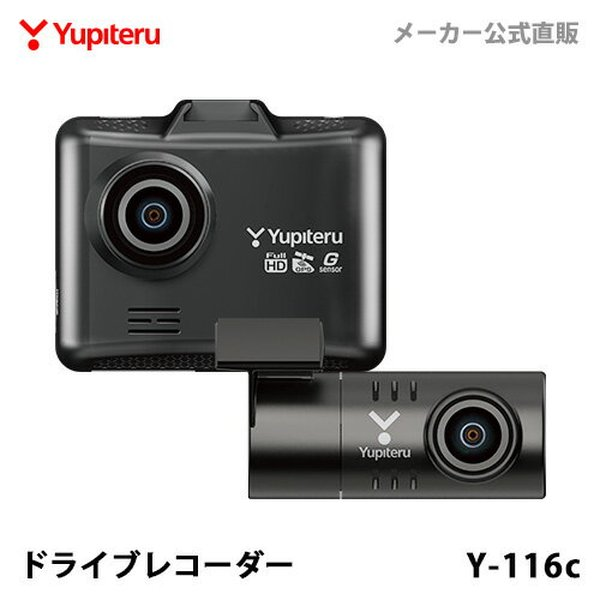
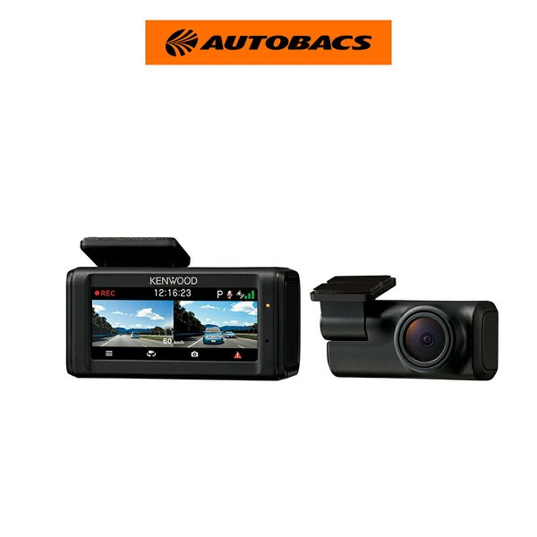
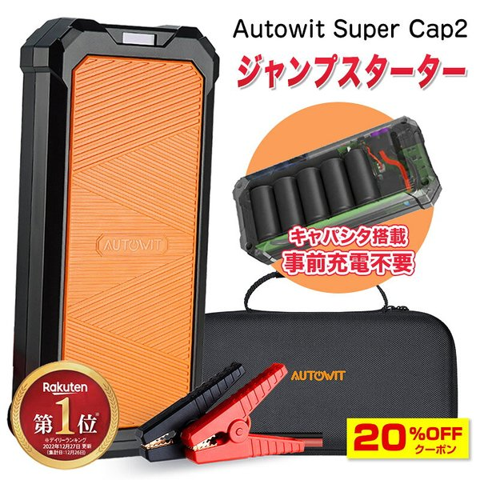
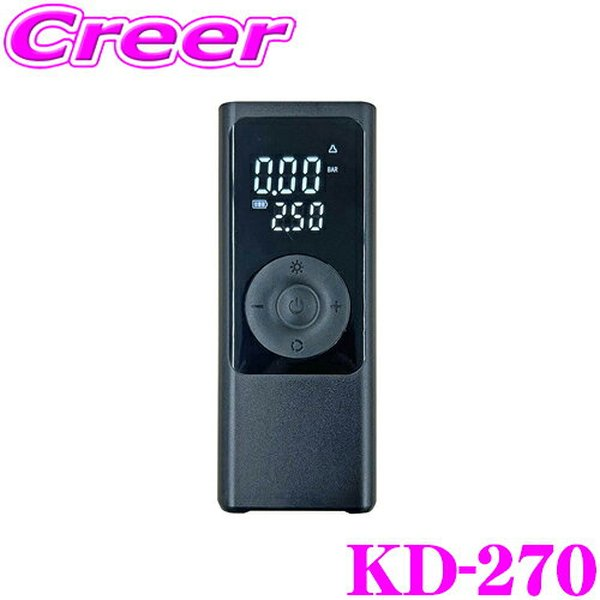
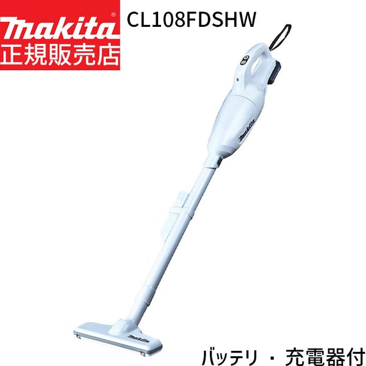
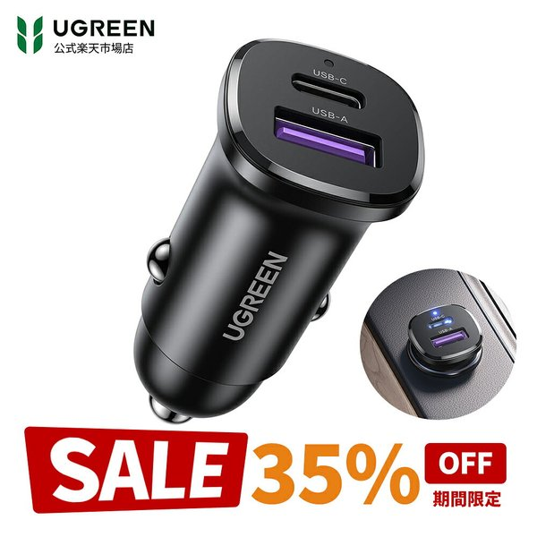
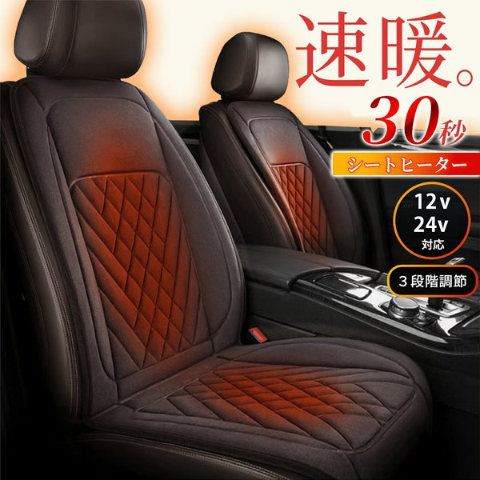
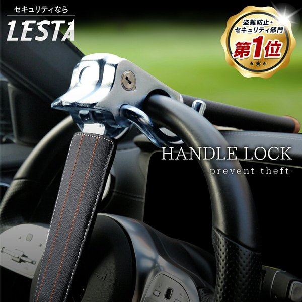
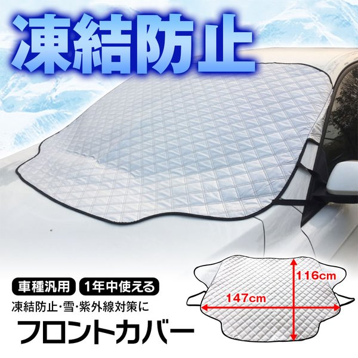

【2026年・年末年始の車ドライブ】前後2カメラドライブレコーダー・ジャンプスターター・電動空気入れ・車載クリーナー・シガーチャージャー・シートヒーター・ハンドルロック10選｜コムテック・ユピテル・ケンウッド・Autowit・カシムラ・マキタ・UGREEN・LESTAを実売価格で比較
年末年始は、普段より長い距離を走る機会が増えます。暗い時間の移動、慣れない道、冷え込む朝。トラブルの多くは、出発前に少し備えておくだけで防げます。
選ぶ軸は3つです。「まず記録する道具」。前後2カメラのドライブレコーダーは、追突やあおり運転の証拠を残せます。駐車監視まで考えるなら、ケーブルが同梱されたモデルを選ぶと配線の手間が減ります。「次に朝のトラブル対策」。バッテリー上がりにはジャンプスターター、タイヤの空気圧には電動コンプレッサー、霜にはフロントカバーが効きます。「最後に車内の快適さ」。シートヒーターと充電器があると、長時間の移動でも疲れ方が変わります。なお、レビュー件数が50件に満たない商品は記事内に実数を明記しています。
本記事では、楽天市場で人気・高評価の車ドライブ・メンテナンスグッズ10選を、実売価格とレビュー評価つきで写真付き紹介します。
- おすすめ10選 スペック・特徴比較表
- BEST 1｜ZDR-550D 前後2カメラ ドライブレコーダー
- BEST 2｜Y-116c 前後2カメラ ドライブレコーダー（GPS・シガープラグ）
- BEST 3｜DRV-R40W 前後2カメラ（駐車監視ケーブル同梱）
- BEST 4｜Super Cap2 ジャンプスターター（スーパーコンデンサ搭載）
- BEST 5｜KD-270 電動コンプレッサー（デジタル表示・AUTOストップ）
- BEST 6｜CL108FDSHW 充電式クリーナー（10.8V・バッテリ付き）
- BEST 7｜シガーソケット USB C カーチャージャー 2ポート（PD30W＋SCP22.5W）
- BEST 8｜速暖シーターくん シートヒーター（12V/24V・3段階調節）
- BEST 9｜ハンドルロック ステアリングロック LST7
- BEST 10｜フロントカバー 凍結防止シート（サンシェード兼用）
- 【読者負担0円】買わなくても得する無料サービス
- まとめ：年末年始の車ドライブ＆メンテナンス10選の選び方
| 順位 | 商品名 | ブランド | 最大の特徴・おすすめ理由 | 総合評価 |
|---|---|---|---|---|
| BEST 1 | ZDR-550D 前後2カメラ ドライブレコーダー | コムテック（COMTEC） | 前後200万画素のフルHD | 4.75 |
| BEST 2 | Y-116c 前後2カメラ ドライブレコーダー（GPS・シガープラグ） | ユピテル（YUPITERU） | GPS内蔵で走行データも残る | 4.69 |
| BEST 3 | DRV-R40W 前後2カメラ（駐車監視ケーブル同梱） | ケンウッド（KENWOOD） | 駐車監視ケーブルが同梱 | 4.76 |
| BEST 4 | Super Cap2 ジャンプスターター（スーパーコンデンサ搭載） | Autowit（オートウィット） | バッテリー上がりのときに電源なしで始動できる | 4.43 |
| BEST 5 | KD-270 電動コンプレッサー（デジタル表示・AUTOストップ） | カシムラ（Kashimura） | 空気圧を設定すれば自動で止まる | 5.00 |
| BEST 6 | CL108FDSHW 充電式クリーナー（10.8V・バッテリ付き） | マキタ（makita） | バッテリと充電器が付属 | 4.69 |
| BEST 7 | シガーソケット USB C カーチャージャー 2ポート（PD30W＋SCP22.5W） | UGREEN（ユーグリーン） | PD30Wの急速充電に対応 | 4.70 |
| BEST 8 | 速暖シーターくん シートヒーター（12V/24V・3段階調節） | シーターくん | 30秒で暖まり始める | 4.52 |
| BEST 9 | ハンドルロック ステアリングロック LST7 | LESTA（レスタ） | 盗難の抑止になる | 4.55 |
| BEST 10 | フロントカバー 凍結防止シート（サンシェード兼用） | ノーブランド企画品 | 朝の霜取りが要らなくなる | 4.46 |
ZDR-550D 前後2カメラ ドライブレコーダー

前後200万画素のフルHD2カメラのドライブレコーダーです。日本製で3年保証、ノイズ対策済み。GPSを内蔵し、駐車監視にも対応します。2.0インチの液晶があるので、その場で記録した映像を確認できます。楽天市場での実売価格は約23,200円（2026年11月時点）。
- 前後200万画素のフルHD
- 日本製で3年保証
- 駐車監視に対応
- 前後カメラの配線が必要で、取り付けは専門店に頼むほうが安心
Y-116c 前後2カメラ ドライブレコーダー（GPS・シガープラグ）

前後2カメラのドライブレコーダーです。GPSを内蔵し、超広角レンズで前方と後方を記録します。電源はシガープラグタイプで、配線を隠さずに取り付けられるのが手軽なところ。帰省や旅行の前に付けたい人に向きます。楽天市場での実売価格は約16,500円（2026年11月時点）。
- GPS内蔵で走行データも残る
- シガープラグで取り付けやすい
- 超広角で広く写る
- シガープラグ式は、駐車監視に別売のケーブルが必要
DRV-R40W 前後2カメラ（駐車監視ケーブル同梱）

駐車監視ケーブルが同梱された前後2カメラモデルです。駐車中の当て逃げやいたずらも記録できます。似た型番のDRV-E40Wはケーブルが別売なので、選ぶときに確認したいところ。国産ブランドの安心感があります。楽天市場での実売価格は約24,800円（2026年11月時点）。
- 駐車監視ケーブルが同梱
- 前後2カメラで記録できる
- 国産ブランドの安心感
- レビューは25件と少なく、価格は高め
Super Cap2 ジャンプスターター（スーパーコンデンサ搭載）

リチウム電池を使わず、スーパーコンデンサで始動させるジャンプスターターです。燃えない構造なので、暑い車内に置いても安心。7.0Lガソリン車と4.0Lディーゼル車に対応し、事前の充電が要らないのが特徴です。楽天市場での実売価格は約15,800円（2026年11月時点）。
- バッテリー上がりのときに電源なしで始動できる
- リチウム電池を使わず燃えない
- 7.0Lガソリン車まで対応
- 本体が大きく重いので、普段から持ち歩くには向かない
KD-270 電動コンプレッサー（デジタル表示・AUTOストップ）

コードレスの電動コンプレッサーです。空気圧を設定すると自動で止まるAUTOストップ付きで、タイヤの空気入れを手軽にできます。デジタル表示で現在の空気圧が分かり、LEDライトも内蔵。冬の遠出の前に空気圧を確認したい人に向きます。楽天市場での実売価格は約5,500円（2026年11月時点）。
- 空気圧を設定すれば自動で止まる
- デジタル表示で空気圧が分かる
- コードレスでどこでも使える
- レビューは1件のみと少なく、連続使用には向かない
CL108FDSHW 充電式クリーナー（10.8V・バッテリ付き）

10.8Vの充電式クリーナーです。バッテリと充電器が付属し、届いた日から使えます。スティック型とハンディ型の2WAYで、車内のシートのすき間や足元の砂を吸い取れます。掃除機として家でも使えるので、車専用機を置くより無駄がありません。楽天市場での実売価格は約17,648円（2026年11月時点）。
- バッテリと充電器が付属
- スティックとハンディの2WAY
- 車内のすき間掃除に向く
- レビューは42件と少なく、車専用のノズルは付属しない
シガーソケット USB C カーチャージャー 2ポート（PD30W＋SCP22.5W）

シガーソケットに差す2ポートの充電器です。PD30WとSCP22.5Wの急速充電に対応し、12V車にも24V車にも使えます。コンパクトなのでシガーソケットから大きく出っ張らず、同乗者の膝にも当たりにくいのが利点です。楽天市場での実売価格は約1,299円（2026年11月時点）。
- PD30Wの急速充電に対応
- 12V車も24V車も使える
- コンパクトで邪魔にならない
- 2ポートなので、家族で同時に充電すると取り合いになる
速暖シーターくん シートヒーター（12V/24V・3段階調節）

シガーソケットにつないで使う後付けのシートヒーターです。スイッチを入れてから30秒で暖まり始め、3段階で温度を調節できます。12V車と24V車の両方に対応し、幅広い車種のシートに載せられます。冬の朝の冷たいシートがつらくない人向けです。楽天市場での実売価格は約3,980円（2026年11月時点）。
- 30秒で暖まり始める
- 3段階で温度を調節できる
- 12V車も24V車も使える
- シガーソケットを1口使うので、充電器と同時には使いにくい
ハンドルロック ステアリングロック LST7

ステアリングに装着するハンドルロックです。リレーアタックやCANインベーダーといった、スマートキーを狙う手口への抑止になります。幅広い車種のハンドルに取り付けられ、緊急脱出用の機能も備えています。楽天市場での実売価格は約7,480円（2026年11月時点）。
- 盗難の抑止になる
- 幅広い車種に取り付けられる
- レビュー4,437件の実績
- 乗り降りのたびに着脱する手間がある
フロントカバー 凍結防止シート（サンシェード兼用）

フロントガラスに掛けて霜と凍結を防ぐカバーです。夜のうちに掛けておけば、朝の霜取りの手間が減ります。夏はサンシェードとして日差しと紫外線を遮り、黄砂や花粉からもガラスを守るので、一年を通して使えます。普通車・軽自動車・SUVに対応します。楽天市場での実売価格は約2,480円（2026年11月時点）。
- 朝の霜取りが要らなくなる
- 夏はサンシェードとして使える
- 普通車からSUVまで対応
- 掛けるときに、ドアに挟んで固定する手間がある
この記事の商品を買う前に、まずは無料で得する選択肢をチェック。どれも登録・利用は0円で、無料期間中に解約すれば料金はかかりません。読みたい雑誌がある人、ポイントを貯めたい人、アンケートなら気軽という人、それぞれに合うものを選べます。
初回31日無料・無料期間中に解約すれば0円 → 楽天ポイントモール｜登録無料で毎日ポイ活
買い物なしでもポイントが貯まる無料サービス → 楽天インサイト｜アンケートに答えてポイント
登録無料・すきま時間のアンケートで貯まる → 楽天カード｜年会費永年無料
新規発行・年会費ずっと0円 →
4つのサービスの違いと使い分けは「出費0円で得する！買わずにポイントが貯まる無料サービス厳選4選」でまとめています。
💡 まとめ：年末年始の車ドライブ＆メンテナンス10選の選び方
車の備えは、記録する・朝に困らない・車内を快適にするの3つで揃えると、長距離の移動がぐっと楽になります。記録する道具は、日本製3年保証のコムテックZDR-550D、シガープラグで付けやすいユピテルY-116c、駐車監視ケーブル同梱のケンウッドDRV-R40W。朝のトラブル対策は、リチウム電池を使わないAutowitのジャンプスターター、空気圧を設定すれば自動で止まるカシムラのKD-270、霜を防ぐ凍結防止フロントカバー。車内の快適さと備えは、バッテリ付きのマキタCL108FDSHW、2ポートのUGREENのカーチャージャー、30秒で暖まるシーターくんのシートヒーター、盗難の抑止になるLESTAのハンドルロックです。この10品を載せておけば、年末年始のドライブはかなり安心して出られます。
楽天市場では「5と0のつく日」や「お買い物マラソン」などのキャンペーンに合わせて購入すると、ポイント還元が最大化してお得に手に入ります。ぜひチェックしてみてくださいね。